In this project, we went through the full process of mocking up a solution to the startup's concept. We choose
AeonCharge as our startup. It is an app designed for electric vehicle drivers to find and pay for a charger in
the US. The application's primary purpose would be to integrate different networks and provide a coherent
service.
Our exemplifications for the iterative process flow include sketching initial ideas and combining them
into wireframes, creating an interactive high-fidelity mockup, collecting and incorporating feedback, and having
test users try out on UserTesting.com.
This project was a group task. We exchanged ideas and collided with each other from the very beginning, resulting
in many rich ideas. From none begin, we then iteratively design our products through the studio and real user
experience and feedback. This process gave me a deeper understanding of the complete process of designing a
product and greatly helped me understand the meaning of user experience.
Sketches
Here are our four sets of sketches from everyone's different brain storm. Then we can combine the ideas to
integrate a first draft which is a quick starter. At the same time, the sketching of the idea needed to start from
scratch greatly helped us define the basic direction and goals.
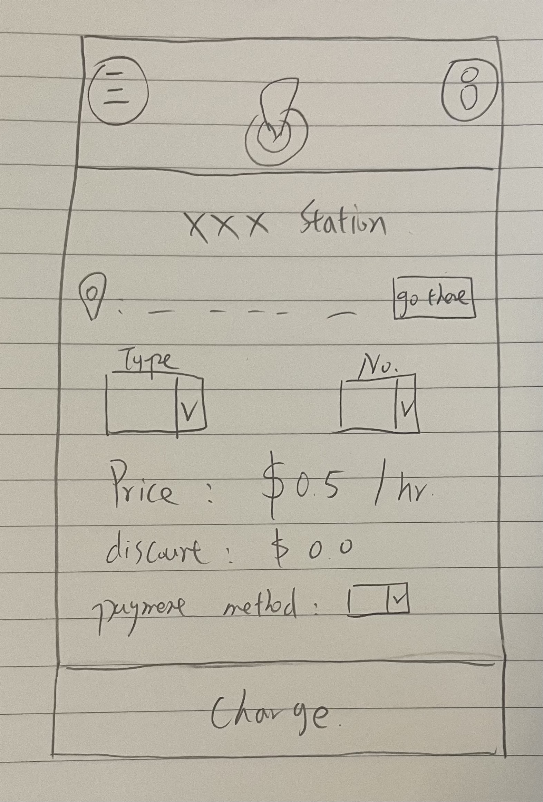
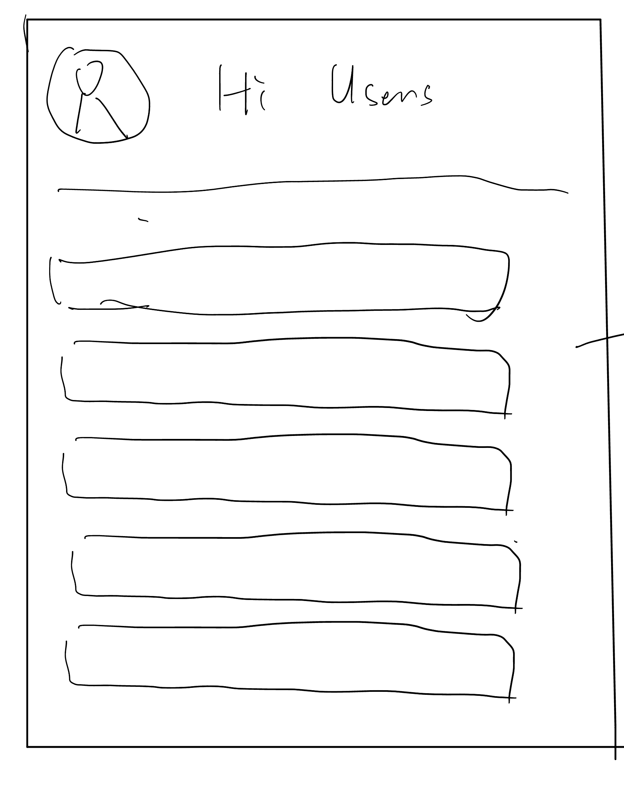
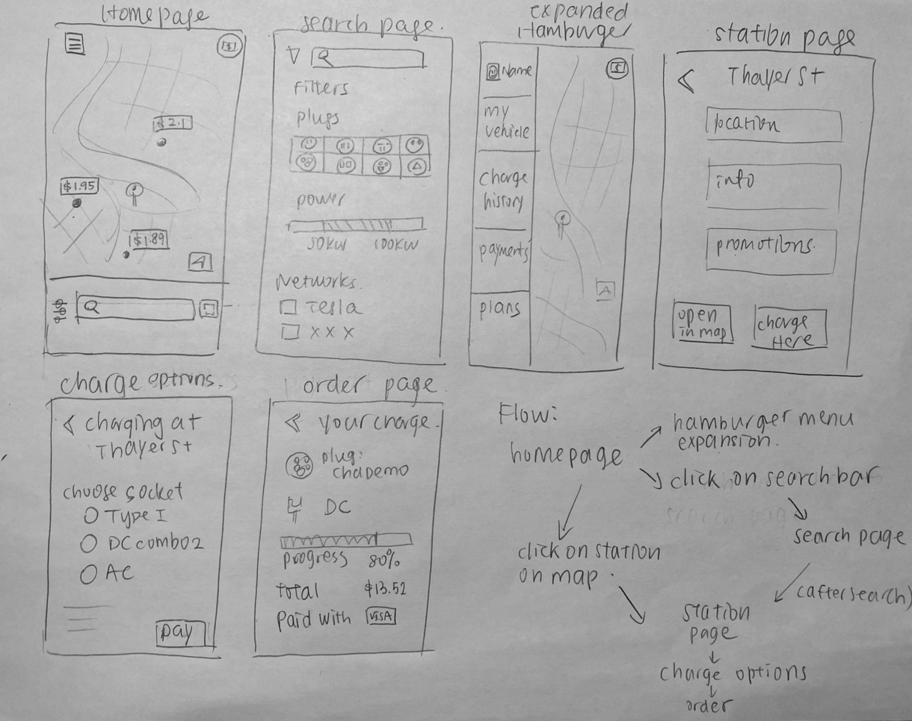
Lo-Fi
For helping to design the interactive user inteface, we draw a set of lo-fi model for overview. The
lo-fi model not only summarized and integrated our different ideas, but also further detailed our
implementation, so that we could better make it on Figma.
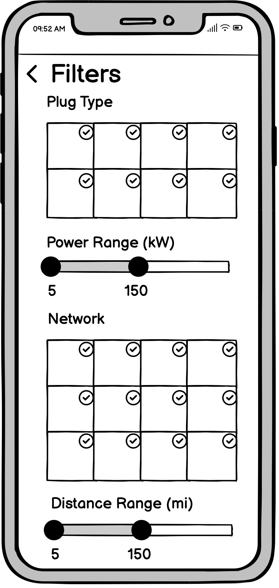
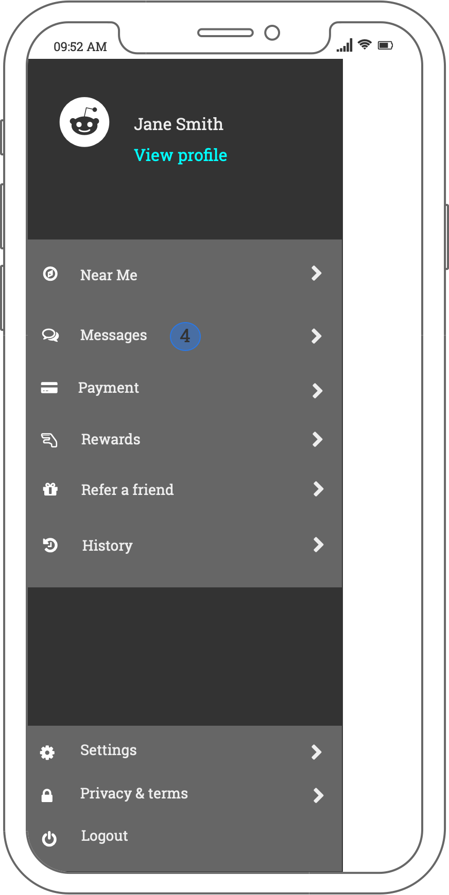
Hi-Fi
Based on the lo-fi model, we designed the hi-fi model and presented them to the studio group and get some
meaningful comments to make the interactive more user-friendly. According to the feedback, we iterative designed
a better version to display. Here is our version of draft ready to show to the real users.
Here are the processes of user testing and the link to look the whole video. Basically, the user experience was
what we expected, they could explore how to use the app by common sense and the process is straightforward.
According to users' feedback and opinions, we have also made corresponding adjustments according to the actual
situation. Through the real user experience, I have a deeper understanding of the needs and ideas of users, and
this
process also makes me understand the importance of user experience.
Task Result
They can find filters in the search interface, and the filter information is clear and convenient.
For the promotions, both users found the correct icon and found it quick and convenient, while one user was
unsure of its function but also showed the promotion in search and the station page. She thinks there should
also be a discount option on the filter interface.
Users have successfully used common sense to find out how to edit personal information and settings through
the hamburger button.
User completion is not ideal for finding an order in progress. Although the page was found, the button
didn't provide enough information to click (they probably thought it was a logo). A user chose to find an
Order in progress through Order history.
The overall process was clear, but one user said the process was not clear because the task instructions
were not in a clear order.
Improvement
The search results screen displays the sorted number of each charging station.
The filter should also offer a choice of whether there is a deal or not.
The coupon button is not obvious, try to change it to the mailbox message button and put the offer push
inside, while also receiving other messages
The ongoing charging button does not determine if there is an ongoing order, which is more obvious by using
a small red-circled number on the side.
Consider placing the ongoing charging in the lower left corner and the app logo in place.
The search bar could be larger for users to use while driving.
The pins on the map should provide thumbnail information when clicked.
 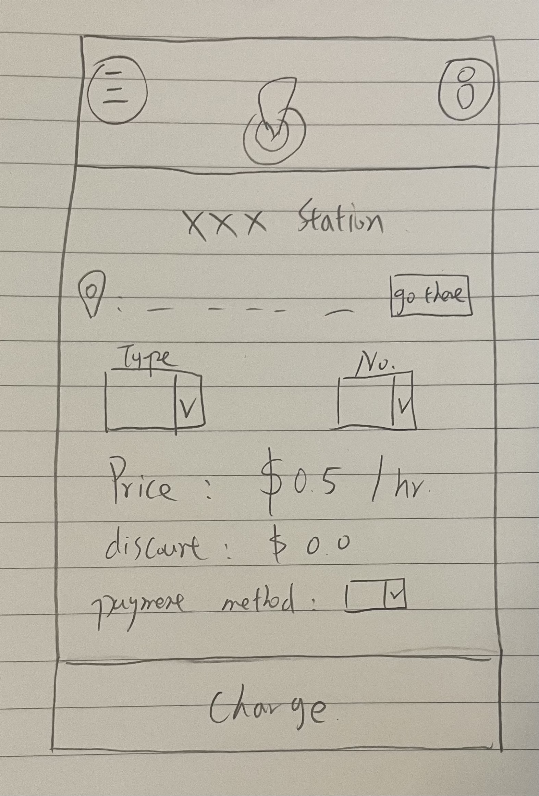
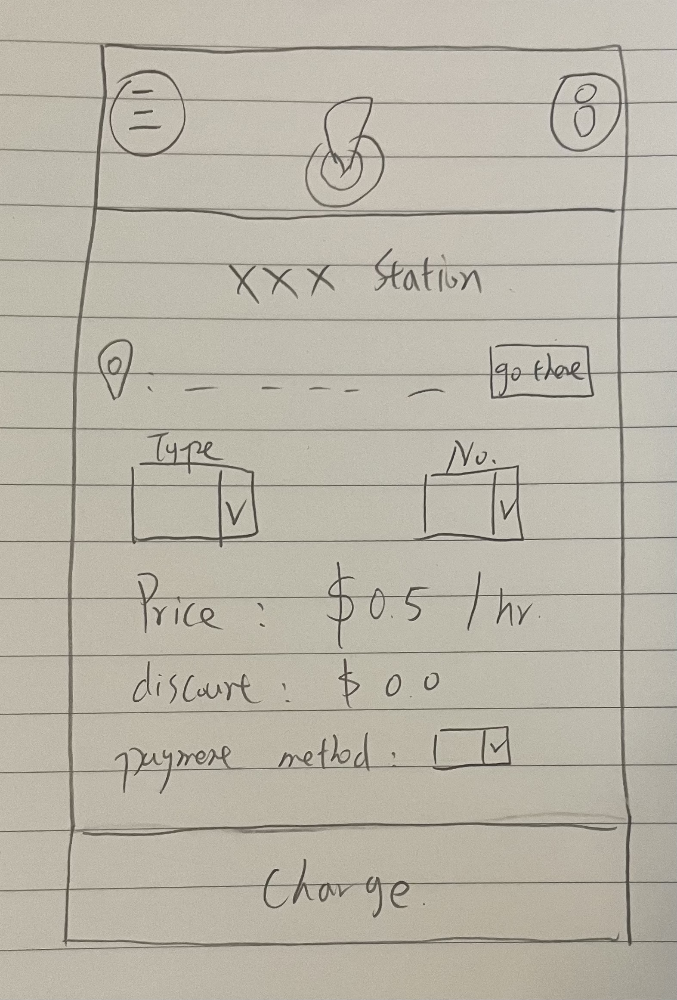

 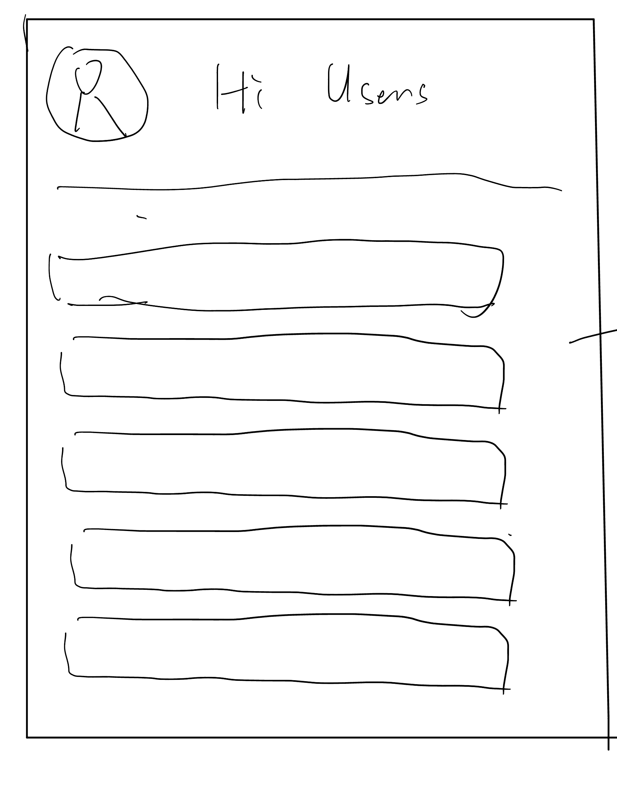
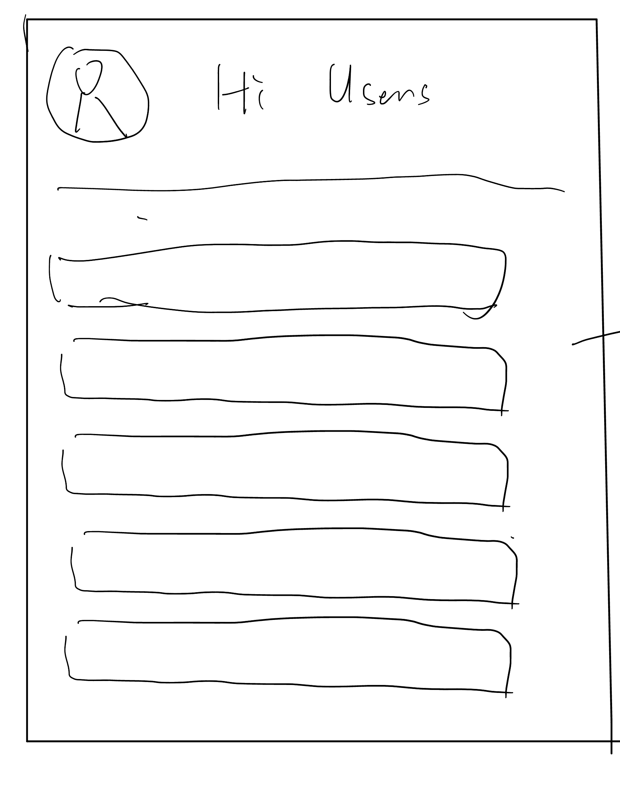
 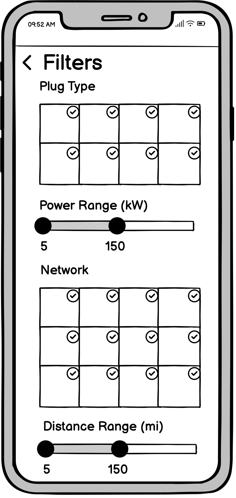
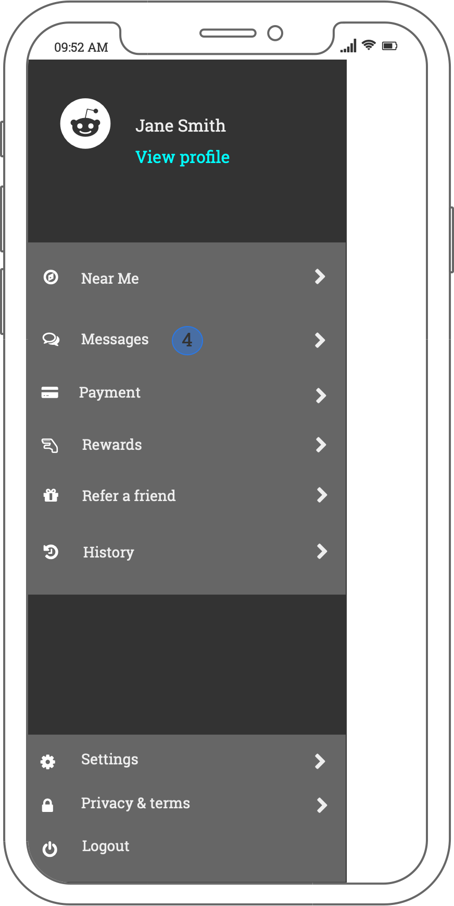
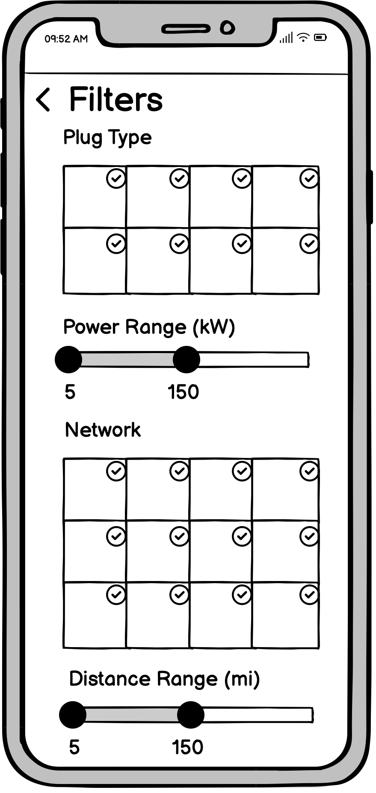
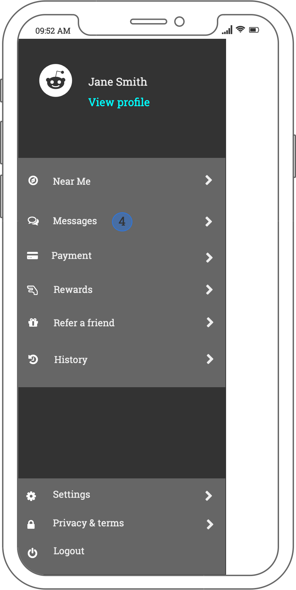